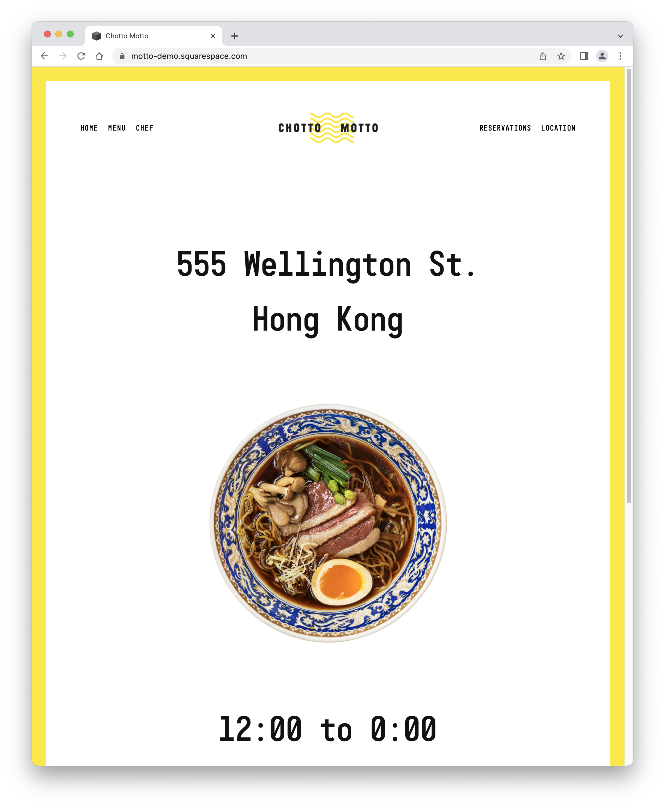
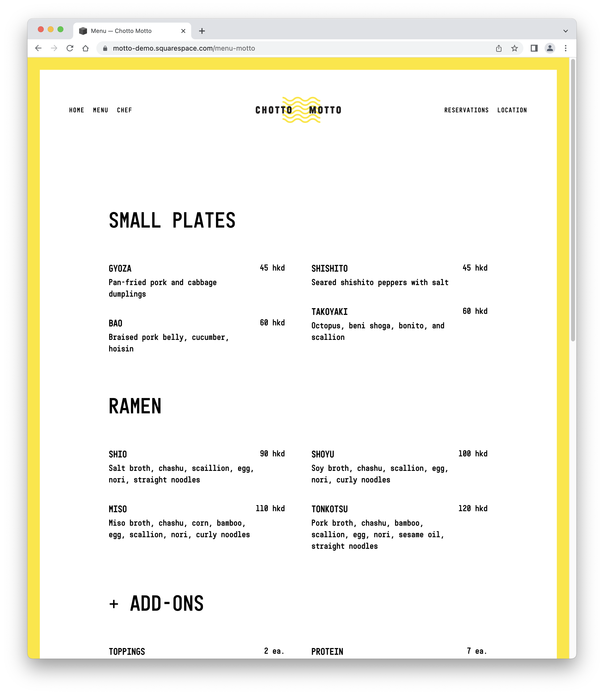
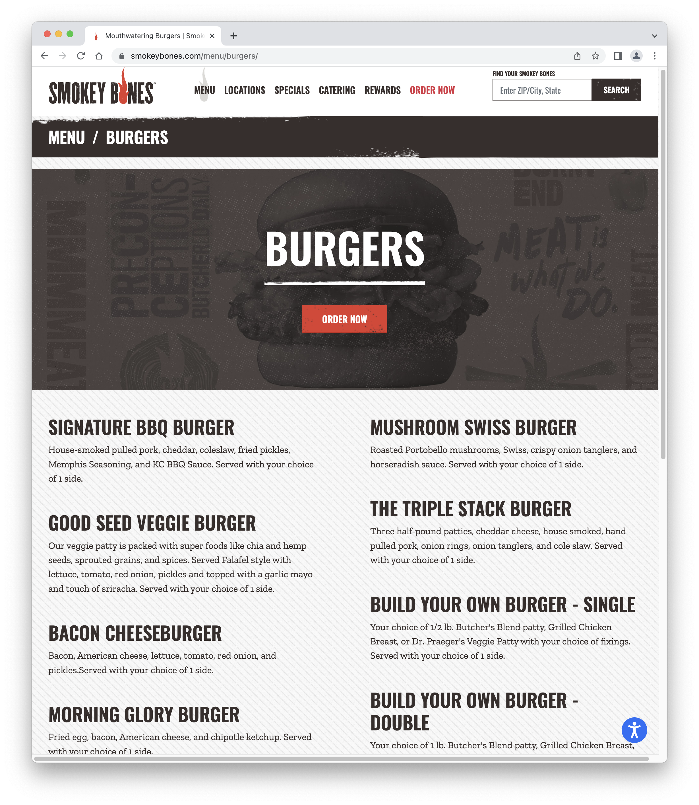
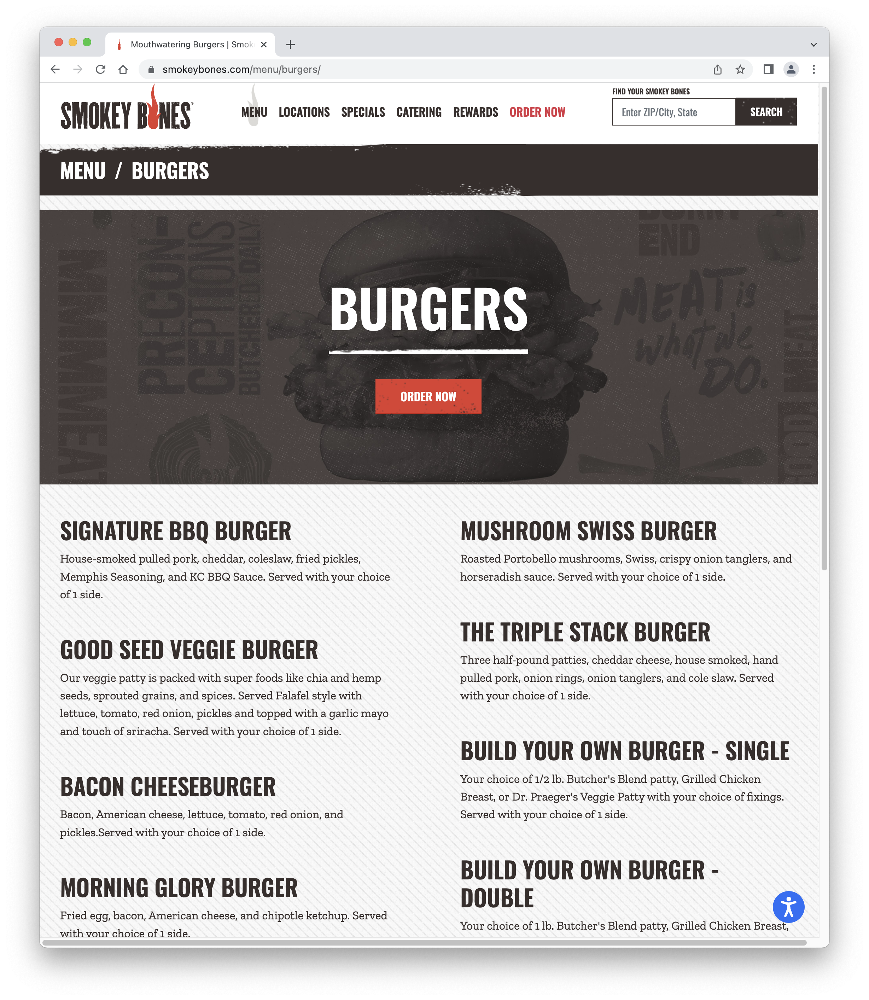

Final project proposal
Introduction
Konglish
This business will be a restaurant that combines Korean and American food in a fusion cuisine. It will serve food that allows customers to explore Asian and American cuisine in a new way.
Target audience
The people that will use this site are any people that are interested in trying Korean and American food. Oftentimes, younger generations and young adults will utilize this website because it is easily accessible to them and they are more curious about trying new food trends, but a wide range of ages and genders could be interested in fusion food.
The primary task and goal is for people to easily understand what is on the menu through a description, price, and photo. They would want to use this because it'll be a way to see what the business is about and the services it provides.
Comparative analysis
Basil


Chotto Motto
 Smokey Bones
 

Website Content
Home
Konglish. Home is where the belly is.
There would be a picture of Korean food and American food beside each other on a wooden table. Something with a more rustic look and from a birds eye view persepctive.
About Us
Konglish was established in 2022. We are a business that strives to introduce Korean culture and cuisine to America and hopes to spread cultural awareness and acceptance through food. Our passion for food stems from growing up with both Korean and American cuisines and finding that cooking and food brings people of all races, genders, and ages together. We hope to continue growing as a family and we invite you to join us! Our owner Sydney Kong decided to name this place Konglish as it represents here upbringing, with Korean traditions, but an American lifestyle.
There would be two pictures split in half, one would be the city in Seoul and the other would be San Francisco. Also a photo of me potetentially for the meet the owner portion.
Menu
Our menu offers a variety of choices! List- Appetizers: Korean hot dogs $8 Fried Hot dogs coated in a cripsy battered, finished with sugar and our signature spicy ketchup [image will be of food] Salad $6 Fresh assortment of greens mixed with our famous gochugaru and grilled meat [image will be of food] Kimchi Fries $4 Fries caramelized with kimchi, onions, melted cheese, our signature sauce and a sprinkling of green onions [image will be of food] Main Dish: Galbi Burger $12 Bulgogi beef burger with caramelized onions, fresh lettuce, tomatoes, and our spicy sauce w/ a side of fries (add $2) [image will be of food] Sweet Kimchi Tacos $12 Sweet strips of bulgogi beef, crunchy purple cabbage and kimchi, fresh cilantro, diced avocado and drizzled generously with a creamy Sriracha-lime crema [image will be of food] Bibimbap Bowl $11 A rice bowl topped with assorted vegetabes, marinated beef, an egg, and our sweet spicy sauce [image will be of food] Drink: Yakult Smoothie $3 Our delicious yogurt smoothie [image will be of food] Milkis, Bananna or Strawberry Milk, and Calpico $2 [image will be of food] Soda $2
Images of a Korean hamburger, Korean hot dog, and Korean tacos
Location
Find a location near you! Names of location, address, phone number and a contact us page at the bottom part; Irvine, San Francisco, and San Luis Obsipo
Would be an image of the dining area or prospective place the restaurant would be or chefs cooking